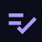

X FollowTidy
Free Unfollow for X
Preparing your list…
Safety controls
Follower protection and the follower limit are checked again immediately before every unfollow. Changes apply to remaining accounts.
Scanned users
0 usersNewest scanned or updated users appear first. Every scanned account is shown, whether unfollowed or kept.
Scanned users will appear here.
Page 1
X FollowTidy stays beside X without changing your active tab or window.